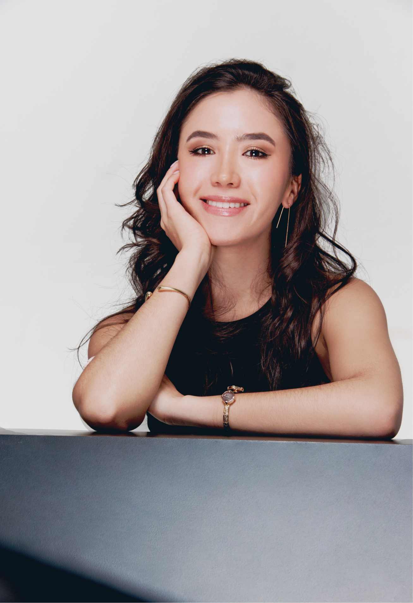
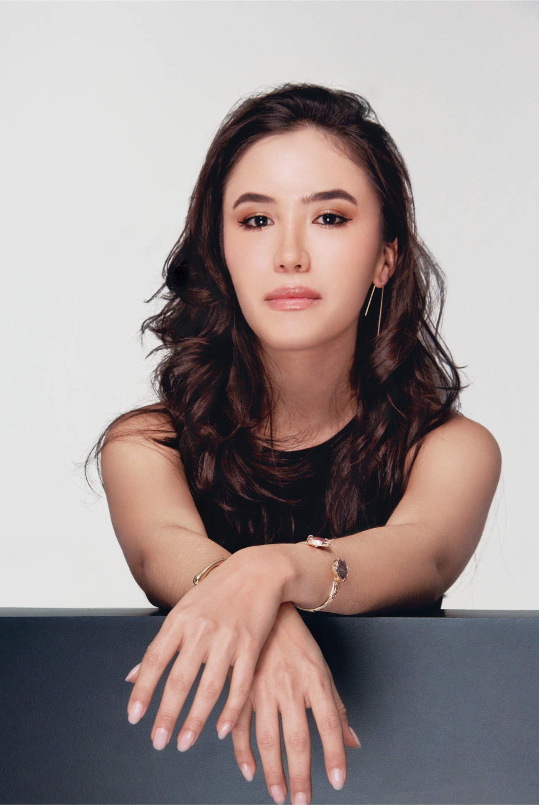
Photography: Eliezer Herrera
@eliezer.herrera
“I was born surrounded by art, music, and garment-making, courtesy of my
Venezuelan family. Working with fashion is part of my being, a
characteristic that’s in blood. It has evolved into more than just a
profession, but rather a way of life. My passion is reflected in the
creation of pieces and designs that embody my personal perspectives on
the vast world of fashion. Moreover, with awareness of social
responsibility, I bet to contribute positively to my surroundings in
every way, with the goal of leaving a positive mark on the path I
create.”
– Mariana Flores
"By Mariana Flores" was the name under which my first brand was
established at the age of fifteen. This venture was founded upon the
concept of embellishing t-shirts with sleeves, embroidery, and various
materials to create a versatile garment. This idea was born from a
school assignment that required the development of a business within a
field of personal interest, ensuring its “success”. The above-mentioned,
also incorporated a social commitment; support to underprivileged
pediatric patients. A portion of the t-shirt sales proceeds were donated
to the San Juan de Dios Hospital in the nation’s capital. These
donations facilitated medical examinations and surgeries that saved the
lives of two children, providing a significant urge to continue the
project.
Later on, I participated in various bazars to promote the brand and its
purpose, which helped me find a position in a multi-brand store, called
Iskia. This achievement was made possible through the invaluable support
of Ms. Aura Marina Hernández, a renowned fashion public relations
specialist from Venezuela, that represents Christian Dior, Louis
Vuitton, Elie Saab, Carolina Herrera and other important brands.
In 2021, I decided to formalize my academic pursuits by enrolling in the
Caracas Design Institute, successfully completing a three-year program
in Fashion Design and rebranding my label as FLOWERS By Mariana Flores.
This rebranding initiative aimed to revitalize the brand, targeting a
youthful, abstract, versatile, and fun image. My most recent collections
showcase a contemporary fusion of art, fashion, nature, and
sustainability. Always prioritizing the elements, colors, and forms
inspired by our natural resources, I seek inspiration in the beauty that
surrounds us in everyday life, from leaves and animals of our
cotidianity.
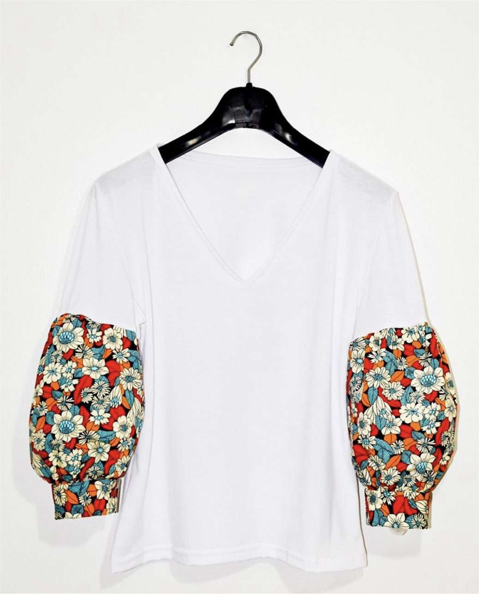
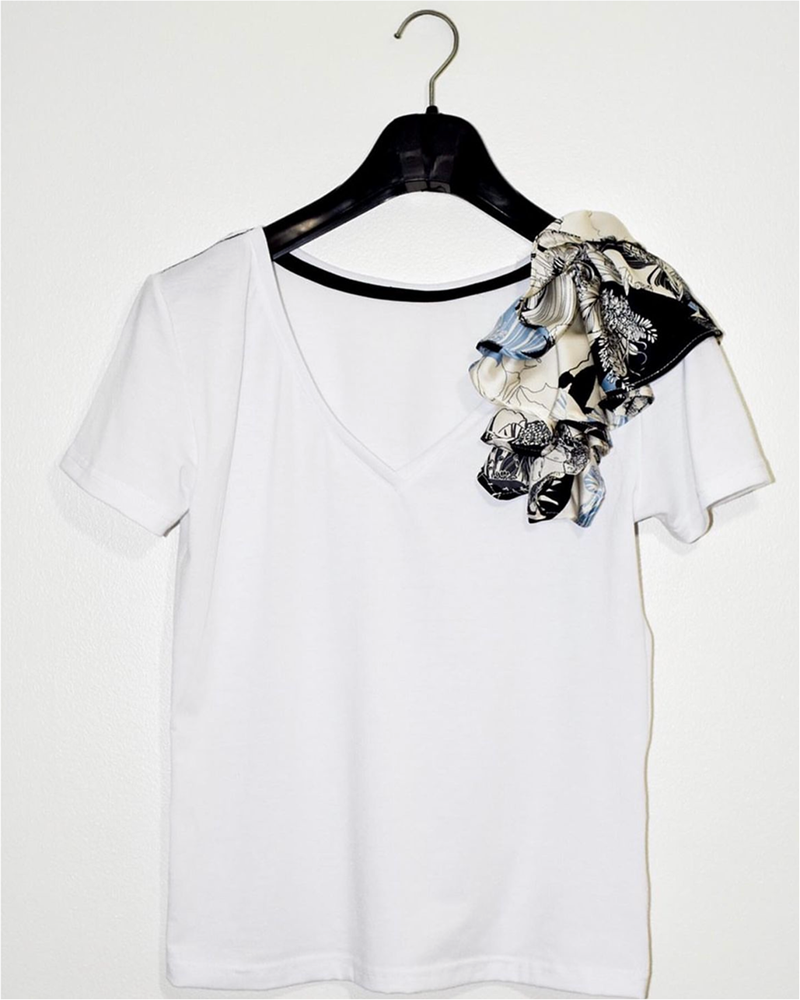
By Mariana Flores. Intervened t-shirts (2019)
The initial designs with which Mariana Flores embarked on her project featuring embellished t-shirts are showcased. Utilizing the images displayed above and below, she participated in the Invedin Bazaar, achieving a remarkable feat by selling all her t-shirts within three days. Subsequently, she secured the opportunity to showcase her creations at the Iskia store, continuing to offer her distinctive designs.
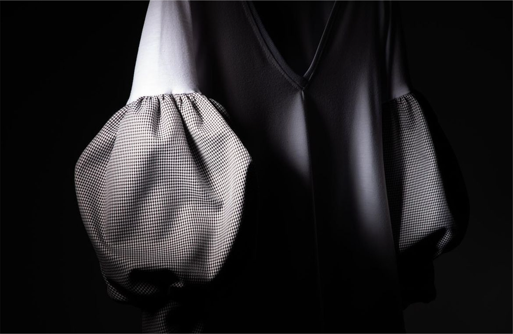
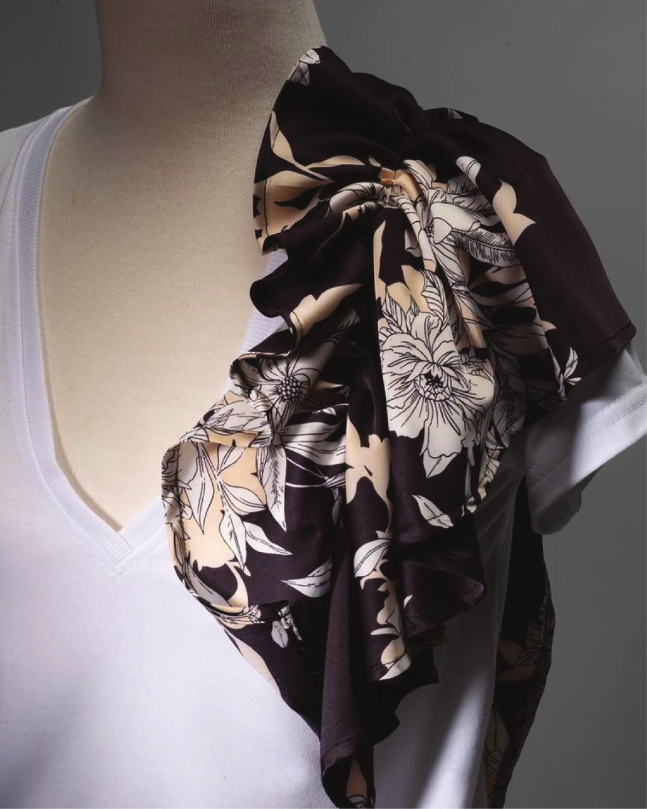
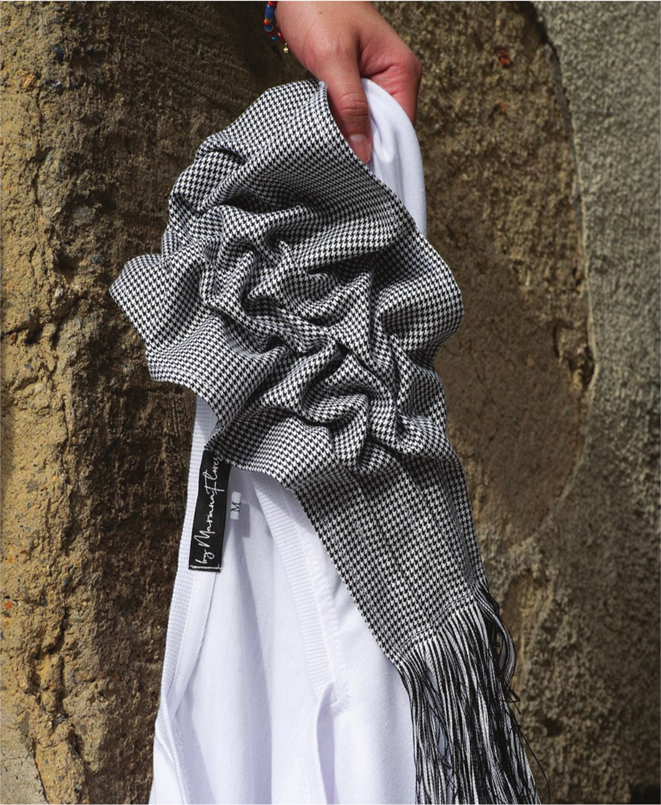
By Mariana Flores. Intervened t-shirts (2019)
Photography: Ernesto Costante
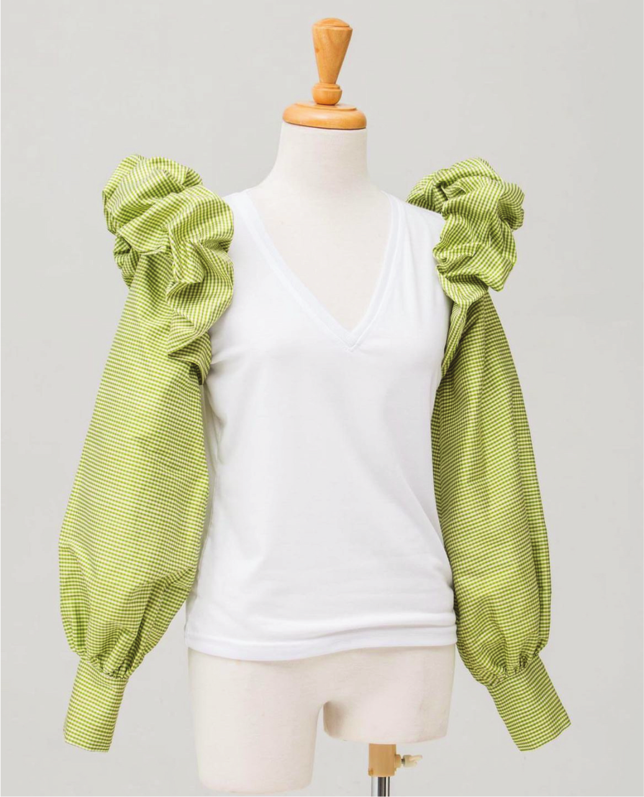
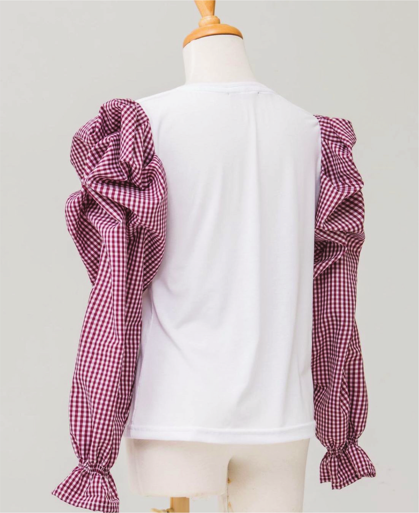
By Mariana Flores. Intervened t-shirts (2019)
Photography: Martin Vicente
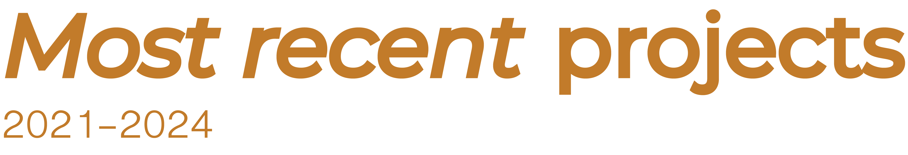
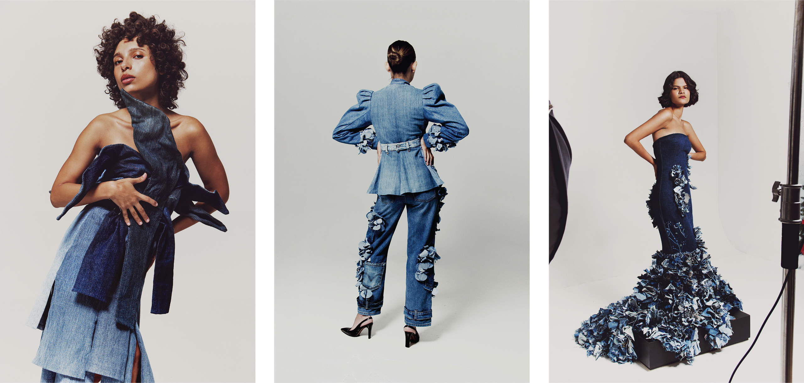
Moldeando El Denim (Shaping Denim, 2024)
Photography: Eliezer Herrera
@eliezer.herrera
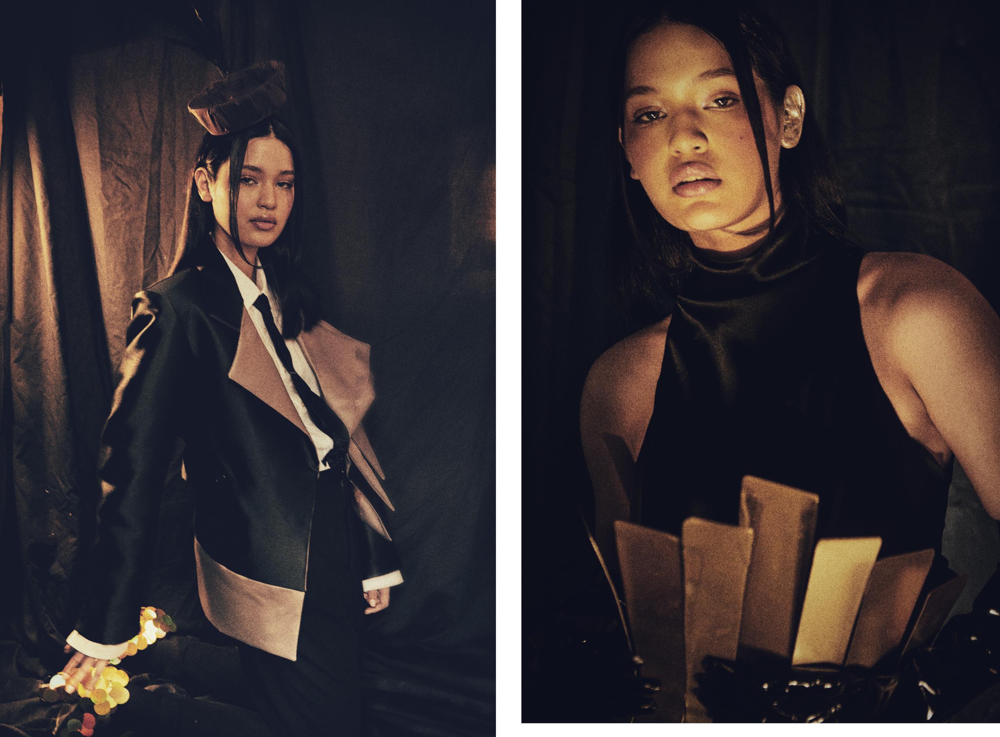
Era Dorada en la Modernidad (Golden Age in Modernity, 2023)
Photography: Alvaro Camacho
@alvarocamachophoto
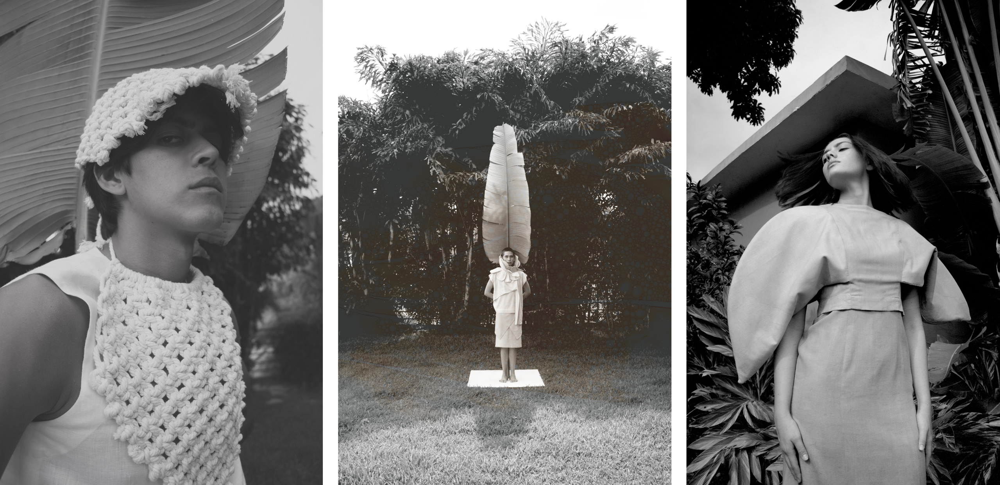
Células (Cells, 2023)
Photography: Carlos León
@clphotostudio